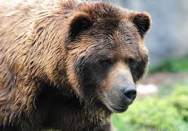

{kind=link}
ФУТБОЛ
После избрания Жюля Риме президентом ФИФА в 1921 году было ратифицировано предложение считать последующие Олимпийские футбольные турниры «чемпионатами мира по футболу среди любителей». Эти турниры — 1924 и 1928 годов — выиграла сборная Уругвая. Благодаря этим успехам у Ассоциации футбола Уругвая не было конкурентов в борьбе за организацию первого в истории Кубка мира ФИФА (более известного в русском языке просто как чемпионат мира по футболу), который прошёл в 1930 году. Уругвайцы стали победителем домашнего первенства, трёхкратными чемпионами мира по футболу и первыми обладателями Кубка мира ФИФА. Это стало началом новой эры в истории футбола[30]. До 1970 года этот трофей носил имя Жюля Риме, также был известен как «Кубок богини Нике», но после третьей победы сборной Бразилии на чемпионате мира был отдан ей на вечное хранение. Вместо него стал разыгрываться современный Кубок мира.
Есть 17 официальных правил игры, каждое из которых содержит список оговорок и руководящих принципов. Эти правила предназначены для применения на всех уровнях футбола, хотя есть некоторые изменения для таких групп, как юниоры, взрослые, женщины и люди с ограниченными физическими возможностями. Законы очень часто формулировались в общих чертах, которые позволяют упростить их применения в зависимости от характера игры. Правила игры публикуются в ФИФА, но поддерживаются Международным советом футбольных ассоциаций (IFAB). Каждая команда состоит максимум из одиннадцати игроков (без учета запасных), один из которых должен быть вратарём. Правила неофициальных соревнований могут уменьшить количество игроков, максимум до 7. Вратари являются единственными игроками, которым позволено играть руками при условии: они делают это в пределах штрафной площади у своих собственных ворот. Хотя есть различные позиции на поле, эти позиции не обязательны[32]. Отдельная футбольная игра называется матч, который в свою очередь состоит из двух таймов по 45 минут. Пауза между первым и вторым таймами составляет 15 минут, в течение которой команды отдыхают, а по её окончании меняются воротами[33].